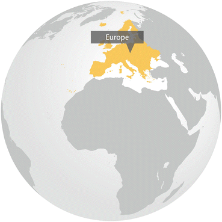

In many of the areas presently occupied by European cities, settlements were formed already in Neolithic times, when the continent was colonized by agriculturalists (9500 B.C. onwards). The re-colonization of European plants and animals after the last Ice Age, which covered large areas of Europe, was not completed before human influence began to cause local disturbances, meaning that the native biodiversity has evolved under human influence. The long history of urban development in Europe, and the location of cities in fertile river valleys, are at least two reasons of why many European cities are often characterized by higher species richness of plants and animals than some of the surrounding rural areas. The long history of co-evolution may be a particular factor explaining why European plants and animals worldwide tend to successfully establish in areas with dense human population.
Europe is today one of the world’s most urbanised regions, with approximately 75 % of the population living in urban areas; a figure that is expected to increase to 90 % in 2100. Over the past 50 years urban sprawl has accompanied the growth of urban areas across Europe and during 1990–2000, urban areas increased 5.4 % (or more than 80,00 km2). This rapid growth mostly occurred in countries and regions with high population density and economic activity (UN-Habitat 2010). Although urbanization in Europe in recent decades has been mostly in the form of spatial expansion rather than population growth, there are also prominent examples of cities that grew very significantly in terms of the number of inhabitants, such as Istanbul with 600 % growth in population and 700 % in the built-up area expansion in the border of İstanbul Metropolitan Municipality between the mid-1950s and the beginning of twenty-first century (EEA 2006; Tezer 2005). At the same time, in some areas of the early industrialized Europe, such as in the Rhine–Ruhr area in Germany, North-West England, Silesia in Poland, the Czech Republic, or Alsace in France, have a range of larger cities that are shrinking in population. This creates new opportunities for innovative use of former residential and industrial areas which have become brownfields (Haase 2013).
The growth of urban areas contributes to an increasing pressure on biodiversity, most importantly by land cover changes, socio-cultural factors, economic development, environmental factors, and administrative failures (EEA 2003). These translate into ecological problems such as habitat fragmentation, degradation and destruction, over-exploitation of natural resources, the spread of alien species, climate change, pollution and waste production.
The long-lasting urban expansion combined with an alteration of the natural environment, such as soil sealing and land consumption, may also explain why it was first recognized in Europe that nature could adapt to urban areas, and that new niches for species could be provided. The roots of urban ecology, environmental protection, and sustainable urban development can also be found in this continent. For example, researchers in Berlin started already in the 1970s to extensively investigate the city’s biodiversity, including plants, animals, and habitats. The data was used in the urban planning of Berlin, and was the first example in the world of systematically incorporating biodiversity data in urban planning. This example of “biotope mapping” was soon followed by other European cities, and today many large cities have long-term monitoring data on vascular plants, different animal groups such as birds, and habitats that are used for city planning and nature conservation. There are also long-standing traditions of designating areas for nature conservation within their borders, for example the National Urban Park in Stockholm (Barthel et al. 2005).
The awareness of goods and services provided by abiotic and biotic urban natures to city inhabitants, and the knowledge about urban ecosystem services, are beginning to find their way into urban planning and land management, especially in Western Europe (Colding 2010; Bendt et al. 2013). The urban space itself needs increasingly be designed to better reflect environmental values and to counteract ‘environmental generational amnesia’ among urban populations. An interesting form of institutional arrangements for civic management of ecosystem services is urban green commons. They include green spaces of diverse land ownership in cities that depend on collective organization and management and that allow residents and citizens to actively work with urban nature in ways that support ecological processes and that promote environmental learning in cities, while allowing for a collective caring of different pieces of land (Colding and Barthel 2013). In the city of Berlin, for example, a fiscal crisis in the early 2000s led to cuts in the funding for public green spaces, which in turn has led to an increase of civic engagement in the management of the urban greens, and an increase in urban gardening (Rosol 2010). However, significant barriers to effective adaptation of ecosystem-based approaches into policy-making, planning and management remain. For example, a recent study in Poland, which represents an example of the countries in Central and Eastern Europe, indicates that these barriers include insufficient funds, lack of local spatial management plans, regulations that downplay the significance of urban greenery, and the fact that the society perceives other issues as more pressing (Kronenberg 2012).
Despite the challenges, there is a growing recognition across the region that to support a sustainable urban development and counteract the current negative changes to the ecosystems connected to urbanization, there is a need to reform institutions and governance mechanisms. In this context, it is essential to counteract the dominant and on-going privatization trend of public land in cities (Lee and Webster 2006), and to safeguard a diversity of property-rights regimes to land in cities (Colding and Barthel 2013). Discussions on future climate changes faced by European cities, further increases the realization that cities need to be progressively adaptable to changes, such as less predictable rainfall and temperature regimes.
References
Barthel, S., Colding, J., Folke, C., & Elmqvist, T. (2005). History and local management of a biodiversity rich urban cultural landscape. Ecology and Society, 10(2), 10. [Online] URL: http://www.ecologyandsociety.org/vol10/iss2/art10/.
Bendt, P., Barthel, S., & Colding, J. (2013). Civic greening and environmental learning in public-access community gardens in Berlin. Landscape and Urban Planning, 109, 18–30. http://dx.doi.org/10.1016/j.landurbplan.2012.10.003.CrossRef
Colding, J. (2010). Super: Sustainable urban planning for ecosystem services and resilience. URBAN-NET Research Anthology 2010 (pp. 35–40).
Colding, J., & Barthel, S. (2013). The potential of ‘Urban Green Commons’ in the resilience building of cities. Ecological Economics, 86, 156–166.CrossRef
EEA. (2003). Europe’s environment: The third assessment (Environmental Assessment Report No. 10). Copenhagen: European Environment Agency.
EEA. (2006). Urban sprawl in Europe – The ignored challenge (Technical Report No. 10/2006). Copenhagen: European Environment Agency.
Haase, D. (2013). Processes and impacts of urban shrinkage and response by planning. In Encyclopaedia of Sustainability Science and Technology. New York: Springer.
Kronenberg, J. (2012). Barriers to preserving urban trees and ways of overcoming them. Sustainable Development Applications, 3(special issue: Polish TEEB Guide for Cities), 31–49.
Lee, S., & Webster, C. (2006). Enclosure of the urban commons. GeoJournal, 66, 27–42.CrossRef
Rosol, M. (2010). Public participation in post-Fordist urban green space governance: The case of community gardens in Berlin. International Journal of Urban and Regional Research, 34(3), 548–563. doi:10.1111/j.1468-2427.2010.00968.x.PubMedCrossRef
Tezer, A. (2005). Urban Biosphere Reserve (UBR) concept for sustainable use and protection of urban aquatic habitats: Case of Omerli Wathershed, Istanbul. Ecohydrology and Hydrobiology, 5(4), 309–320.
UN-HABITAT. (2010). State of the world’s cities 2010/2011 – Cities for all: Bridging the urban divide. London: United Nations Human Settlements Programme, Earthscan.